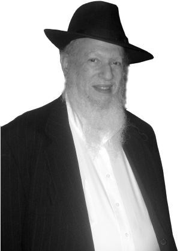

Shlichus Instead of Retirement
For many years, R’ Yankel Getz taught and did research in the field of psychology. Then he became a mashgiach of kashrus. Today, he and his wife are the unofficial shluchim of Watertown, New York.

“It wasn’t until about 2 a.m. Erev Shabbos that I finally reached her hospital room. She was scheduled for surgery at 8 that morning, but was hesitant and wanted to discuss things with me before making a decision. When I arrived, Golda put in a request for the surgical resident on duty to come to her room, so I could hear all the information first-hand, as she had. In the meantime, the two of us began discussing the situation in detail, from her perspective.
“About 3 a.m., the resident arrived, and began a thorough review of the various surgical options. He also said we could do nothing, and they could monitor things to see whether or not it would heal properly; if not, surgery could be done at that point. He stated that, in his opinion, we should have the operation done as soon as possible.
“The operating room had been reserved for Golda to have the operation at 8 a.m. The surgical team was to assemble at 6 a.m., so that was the deadline to notify the hospital if we wanted to cancel the operation. The resident left after spending close to an hour with us, and Golda and I continued talking about the situation, when I suddenly remembered a horaa from the Rebbe from a number of years ago: elective surgery should not be done Erev Shabbos. Golda immediately agreed that her situation was not that type of emergency, so it was decided to postpone the procedure and we immediately informed the hospital of our decision.
“As we continued talking, another issue arose: I asked Golda how such surgery could even be considered without having written to the Rebbe? She again agreed immediately, and we began a long session reviewing in great detail all the issues involved. Since it was to be Golda’s operation, we agreed that she would be the one to write, but we wanted the Rebbe to have accurate and complete information.
“Finally, close to dawn, I left the hospital and looked forward to some badly needed rest. Arriving at my host’s home, I immediately went to sleep. After about two hours, the lady of the house called me to the phone; Golda was asking for me. Holding the phone to my ear, still groggy from being awakened so early, I heard her shouting, ‘Yankel! We don’t have to write to the Rebbe. The Rebbe already answered us!’ ‘What in the world are you talking about?’ I asked. She said she needed to talk to me, that the Rebbe had sent a shliach with the answer, and that I should drive over to the hospital immediately.
“I rushed over to hear the amazing story she had to tell. It seems that around 6 a.m., a man entered her room wearing green operating scrubs. He looked at Golda and immediately began reciting a bracha, ‘Boruch Ata …’ Golda was so stunned, she didn’t hear if he even finished the bracha, and if so, which one it was! Then he said, ‘Not bad, since I haven’t said a bracha since my bar mitzvah.’ Then he said, ‘Listen, Ma. You are about my Mother’s age, so I feel I can call you Ma. You don’t need surgery. If you follow my instructions, I’ll release you in a few hours, and you can go home to spend Shabbos with your family.’ Golda was stunned of course, and was wondering, who was this guy? He had no name tag and hadn’t even introduced himself when coming into the room. ‘Who are you?’ she finally asked. ‘Oh, I’m Dr. Ivan Tarkin.’ She remembered his name mentioned by the resident surgeon, when the resident spoke to her in the Emergency Room.
“Golda recounted to him the discussions of the previous night, and asked how the recommendation had changed so drastically. He said that the team had assembled at 6 a.m. to review her case. After reviewing her X-rays and tests together as a group, they decided to allow her to try non-surgery. Dr. Tarkin then explained that she would be fitted with a post-surgical boot. She had to promise to seriously restrict her walking, and to sit most of the time with her ankle elevated above her heart. After a month or so, she would return for new X-rays; if these showed proper healing, they would continue; otherwise, they would evaluate what to do next. Golda agreed, and Dr. Tarkin left the room.
“Soon after a woman came into the room and was staring at Golda with an amazed look on her face. Golda asked who she was and why she was staring. She said that she was the head nurse on the floor, and that Golda’s previous visitor was none other than Dr. Ivan Tarkin, chairman of the entire department. Upon seeing him there, she spoke with the other nurses at the desk and they all agreed that this was a highly unusual event. Most of them didn’t even know who he was because it was very rare for him to visit patients on the floor; usually, they came to him in his office. When he did visit patients, it was only for a few seconds. She came to Golda’s room to see who this extraordinary person who merited such a visit was.
“We felt that this doctor was a shliach who answered us before we could ask the question. We had merely thought of writing to the Rebbe and the Rebbe had already intervened and changed the reality from one extreme to another. A few hours later, my wife was released and within a few days she was doing remarkably well.
“There are those who ask how we can connect to the Rebbe nowadays. How can we receive his guidance and blessings? I say that the Rebbe is with us, leading and guiding us. You just have to be connected; you need to believe. The reality is more powerful than anything you can imagine.”
And that was the end of R’ Yankele Getz’s first story.
R’ Getz spent time with his wife in Tzfas recently, which enabled us to get a glimpse into the life of a Chassid who became a Lubavitcher in the 1960’s. He is a Chassid whose thoughts and time are devoted to one thing: how to give the Rebbe nachas.
R’ Getz is a man of many hats. A separate interview can be conducted with him about his area of expertise, psychology, and he can be interviewed about kashrus, a field in which he spent many years and in which he is a big maven. He can also be interviewed about the past eight years in which he and his wife Golda are the unofficial shluchim of the Rebbe in Watertown. For this article, we chose to focus on his life in general and his private audiences with the Rebbe.
DISCOVERING A NEW WORLD IN CROWN HEIGHTS
Yaakov was born during World War II in Maryland to a Conservative family. His chinuch included going to shul and celebrating Passover, but it was all without spiritual significance; it was solely ritual. When he graduated public school, he went to the University of Maryland to study psychology.
“In 5725/1965, I was busy working on my degree when an ad from the student organization called Hillel caught my attention. The ad invited students for Shabbat with Chabad under the heading: Come and Get Acquainted with the Intellectual Approach to Judaism.
“This piqued my interest. A religious friend, who was organizing the trip, convinced me to join and I happily agreed. The truth is that I did not go with many expectations. Until then, I had not felt a desire to get to know the inner world of Judaism. We were always discussing other people’s problems. But a trip to New York, which I had never visited, for just $25 which included full room and board? Why not?
“So there I was, one Friday, shortly before Shabbos, getting out in front of a house in Crown Heights and looking for the people who were going to host me. While I was getting my bearings, I saw a Chassid leave his house with two bags of garbage. He immediately noticed that I was looking for someone and he offered his help. ‘I’m looking for Rabbi Leibel Groner,’ I said. He smiled and said, ‘That’s me. Welcome.’
“I was wearing a blue shirt and pants and his wife thought I was a mailman. I later discovered that they were not expecting guests that Shabbos. A mistake had been made but I was oblivious to it all.
“The more time I spent in Crown Heights, the more curious I became. I didn’t imagine that Judaism has such depth. I had naively thought that mitzvos are done in order to preserve our Jewish history. I had no idea that this is a way of life.
“I barely slept for three days. I was either reading or listening. The talks with R’ Groner opened up a world to me and I felt like I was reborn. On the last night of my stay, R’ Groner asked me why I didn’t go to sleep. I told him, ‘If I wanted to sleep, I could have stayed at the university.’
“On Shabbos, we were in 770, of course, with the Rebbe. It was the year that the Rebbe’s mother, Rebbetzin Chana, had passed away and there was a farbrengen every Shabbos. I sat for hours, fascinated, even though I didn’t understand a thing, but the atmosphere was electrifying. When I returned later on to R’ Groner’s house, he summarized in English what had been said.
“That Shabbos with the Rebbe something happened that I’ll call ‘heavenly.’ At the university, there was a French fellow who became friendly with me, mainly because we had similar interests. We loved talking about the stars, constellations and astrology. The subject interested me at the time. It’s interesting that on that Shabbos, the Rebbe spoke about this very subject. He quoted various opinions and when R’ Groner repeated them, I was astounded. I felt that the Rebbe had said it all for me.
“I returned to Maryland on Monday, a completely different person. My entire understanding of Judaism had changed. It was no longer an ancient tradition that had to be preserved under duress, but a living Torah.
“Every Friday evening a group of religious Jews sat in the university cafeteria and had a Shabbos meal together. I asked if I could join them and noticed that they did not give me wine when they made Kiddush. I asked them about this but they avoided answering me until one of them said, you can’t touch the wine because you aren’t shomer Shabbos. I did not understand this at the time but I said, ‘I am shomer Shabbos.’ And indeed, starting from that Shabbos I really began keeping Shabbos.
“I was so enthusiastic about the Rebbe and the special atmosphere in Crown Heights that I spoke about the Rebbe constantly. My friends called me the Lubavitcher of the university. I didn’t know a thing about Torah and mitzvos but I was already a Lubavitcher.
“That first visit to the Rebbe led to other visits. On Sukkos, I was a guest of R’ Mendel Baumgarten with whom I stayed many times afterward. I had a good friend who preferred going to the Skverer Rebbe. When I asked him why, he said that the Admur received people every Motzaei Shabbos. He tried convincing me to join him but my soul was drawn to Lubavitch and I remained in Crown Heights.
“One day of Chol HaMoed, R’ Berel Baumgarten, shliach in Buenos Aires, farbrenged in the sukka. At the end of the farbrengen I asked him, ‘Berel, why do you speak of the Rebbe as the only leader when there are other rabbis and Chassidic Rebbes?’ He looked at me and said, ‘Yankel, believe me, there is no one else.’ These few words, without explanations and proofs, really got to me. Right after Simchas Torah, I wrote my first letter to the Rebbe. In nine pages, in small print, I summed up my short life thus far.
“At first, my parents had taken the change in me very hard. But when they realized it wasn’t a momentary whim but a path in life, they calmed down. That year, I took them with me to 770. We all stayed at the Groner’s and my parents came with me to shul and to farbrengens. When we returned from 770 to our hosts, my mother said in wonder, ‘This is the first time that I’m seeing people pushing in order to get into a shul and not pushing to get out of one.’
“That Shabbos, my father told me that Torah and mitzvos are not foreign to him and that his parents were Shabbos observant. For example, the horses were given enough food before Shabbos. The only thing that bothered my parents was the thought of my leaving university and not getting a job, but when they saw that I was continuing my studies and had even become a lecturer and researcher, they stopped worrying and they themselves became very interested in Chassidus.”
THE REBBE’S GUIDANCE
As the Rebbe instructed him, R’ Getz continued his university studies while learning more about Torah and mitzvos at the same time.
“In the summer of 5626/1966, before my birthday on 15 Sivan, R’ Groner suggested that I meet the Rebbe personally. He told me how to write and what to write in the note that I would submit to the Rebbe. I did as he suggested. I kept a copy and gave the other copy to R’ Groner to give to the Rebbe. When I entered for yechidus, for some reason the letter was not there and I gave the Rebbe the copy in my pocket. The Rebbe read it word by word and reread it three times. Throughout this time, I wished the earth would swallow me up.
“When I went out, people asked me to describe the room but I couldn’t answer since I had been unable to take my eyes off the Rebbe. One of the questions I had asked was whether to go to yeshiva. The Rebbe did not answer that; instead, he spoke to me about my university studies. The Rebbe told me, ‘Your purpose is to be a well-known scientist.’ I was living in Detroit at this time and when I told the Chassidim about this, they were amazed that the Rebbe had revealed to me the purpose of my soul’s descent to this world. At the time, I was doing research in my field of psychology. My first job had been with a drug company that made psychiatric medication.
“In that same yechidus, I asked the Rebbe how to do mivtzaim while I worked at what was an intense schedule. The Rebbe smiled and then began to patiently explain to me, calculating how many hours a student studied, then how many hours of free time there were which he used for sports and fun. ‘Cut your free time in half and do mivtzaim in one half of the time. You will see that there is enough time,’ said the Rebbe.
“At another yechidus, I came with a complaint. The Rebbe was constantly pushing me to study and work but I felt I was wasting my time. I had only a little bit of time to do my research and work that took a lot of time, and I wasn’t interested in pursuing this anymore.
“The Rebbe’s answer was fascinating. He told me that the secret to success in anything in life was to be organized. He told me about the Tzemach Tzedek, that people asked him how he was able to write so much along with his myriad other responsibilities. The Rebbe said that it was because he was organized. He had set hours in which to write and when the time was up he stopped, even if he was in the middle of writing a sentence.
“At this point the Rebbe smiled broadly and asked, ‘And what is the key to being organized?’ The Rebbe answered this himself: Shacharis with a minyan. Davening in the morning is like Rosh HaShana and its impact is for the entire year. If the davening is as it should be, the entire day will be different. Like a person’s body, if the head works as it should, then all the limbs work well. To get the day started on the right foot, it has to be with a minyan. The Rebbe said, if you daven without a minyan, the day is like ‘without feet and without hands.’ It is idled away and is not organized.
“In conclusion, the Rebbe explained the importance of davening with a minyan. He explained that davening with a minyan saves one from extraneous thoughts. When davening with a minyan, there are also extraneous thoughts but of what, asked the Rebbe. He answered: whether to daven quicker or slower, whether to go past the chazan or to wait for him, and these extraneous thoughts are completely different. Then the Rebbe raised his hand upward like someone engaged in a Talmudic debate.
“Since that yechidus, wherever I am, if there is a shul with a minyan, I attend it.”
GO ON SHLICHUS BUT DON’T CAUSE MACHLOKES
In 5728/1968, after he married, R’ Yankele moved with his family to Windsor, Ontario in Canada. He and another three Jews joined the staff of the local university.
“There were two Orthodox shuls there, one big and one small. The three other men were traditional, and together they decided to give the small shul a shot in the arm and daven there. Eventually, the president and members of the board were convinced that in order to expand the shul, they needed to get a rabbi to lead them. Of course, I pushed for a Chabad rabbi. They liked the idea and I arranged yechidus for them with the Rebbe.
“On the appointed day, the president and another member of the board went to the Rebbe. Afterward, they found someone who agreed to come and audition one Shabbos. This man, R’ Nachum Kaplan, stayed with us for Shabbos. The people connected with him immediately and he with them. The president wanted to accept him on the spot but R’ Kaplan said he had to get the Rebbe’s consent.
“A few days later, he called me with a question. He said he had written to the Rebbe and the answer was he could go on condition that there be no machlokes involved. He asked me whether I knew of any disputes at the shul. I didn’t, and I said I would look into it. After some research, I learned that there was a big fight between our president and the bigger shul, and the purpose of bringing a rabbi to the city was to take congregants away from them. Of course, R’ Kaplan declined the position.”
R’ Yankel Katz was convinced by his friend, Professor Yitzchok Block, of the university of London, Ontario, to move and teach with him in exchange for a generous stipend.
“There was an Orthodox shul with a rabbi, but the minyan took place only on Sunday, Monday, Thursday, and Shabbos. My father died a few months later and I asked to be chazan for all those t’fillos. Professor Block gave me a list of people who might come to daven, and every day, I would call them and ask them to come so I would have a minyan. With Hashem’s help, we were able to hold regular minyanim.
“This idyllic situation did not last long. There was a Litvishe fellow in shul who did not like my nusach Sefard Chassidic version of Kaddish with the addition of, ‘v’yatzmach purkanei vikarev meshichei.’ We had arguments about it after every t’filla. The rabbi, who was also Litvish, did not want to get involved at first. He was happy that someone had arranged minyanim every day. But the Litvishe fellow pressured him and he decided to ask his rabbi. There wasn’t much love for Chabad in these areas and the p’sak that he got was that it was forbidden to allow me to continue being the chazan.
“The rabbi was a nice guy, not the quarreling type, but his rabbi had said what he said and so he asked me not to continue being the chazan. The compromise was that I would continue until the end of the Shloshim, but then I couldn’t continue being chazan unless I changed my nusach to the shul’s nusach.
“At the end of the Shloshim, I visited 770 and asked R’ Dworkin, the rav of Crown Heights, what to do. He said that I could not change my nusach. ‘You can’t come to 770 and say Kaddish one way, and say Kaddish over there another way. Remain firm and they will see that they have to give in.’ But what should I do? I would not be able to be the chazan for the rest of the year? R’ Dworkin said I shouldn’t worry and that my father’s soul would have an aliya from other mitzvos.
“Professor Block had another idea, that we organize t’fillos in the Hillel on campus. He would get students and I would get additional people. I would leave the shul, and this way, many students who were unfamiliar with t’filla, would be able to pray. We wrote about everything that had been going on to the Rebbe and the answer was that it was a good idea to arrange a student minyan on campus, on condition that it would not harm the minyan at the shul. The Rebbe was very sensitive about avoiding machlokes.”
COLLECTING SOULS
In the course of his academic work, Professor Getz published much of his research. He spent all those years on complicated psychological research for which he interviewed many people and wrote thousands of pages of findings. Then his world came crashing down. There was a fire at the university and the room that contained all his papers and research went up in flames. He felt he could not continue at his work anymore. He wrote to the Rebbe but did not receive a response. He decided to drop academia and change direction. He joined the Vaad HaKashrus of Detroit, where he lived, and was sent to distant factories to check out the kashrus of their products.
“I met with the Rebbe’s secretary, R’ Chadakov, and told him I wasn’t comfortable with what I was doing. In my first yechidus, the Rebbe had told me that my mission in life is to be a well-known scientist and here I had dropped it all and was working in kashrus. Was it possible for a person’s shlichus to change over the years?
“R’ Chadakov said I could stop worrying and that a person’s role could definitely change and that it was divine providence that led me.”
***
The Getz family lived in Detroit for over twenty years. R’ Getz became an expert in kashrus, gaining vast experience and knowledge in all aspects of the field. For the past eight years, he and his wife have been living in Watertown, NY, where they are available to help Jews vacationing in the area or those who live there or are in the many army bases in the area.
“My wife retired and we were looking for a quiet place where we could do the Rebbe’s work. I was familiar with Watertown from the time I was a mashgiach there in the dairies. All our children are married and we took on this challenge.”
About two hundred Jewish families live in the area, but many more Jews are present on the four university campuses and the army bases.
“There is a synagogue that is a joint effort of the Reform and Conservative, which has only twenty worshipers who pay membership dues. When I asked them about other Jewish families, they had nothing to tell me. However, since we arrived here, we keep on finding more Jews. We serve as the chaplains at Samaritan Medical Center and in the state prison system. Every Yom Tov we have programs at our house.”
R’ Getz has a special story about being a chaplain:
“I was called by a hospital and told that a very sick woman was asking for a rabbi to bless her. I went to see her and found her and her husband. She asked for a bracha. I stayed there for a while to encourage them. I ended up finding out that she is not Jewish but her husband is. The interesting thing is that they thought the opposite, that he is the goy and that she is the Jew because she underwent a worthless conversion. When an opportunity arose, I informed him that he is Jewish and suggested that he put on t’fillin. He had no idea what I was talking about, he knew that little about Judaism.
“I explained it to him and he was happy to do the mitzva for the first time in his life. The next day, they called me from the hospital to tell me that he had suddenly died.”
Not far away is an army base where R’ Getz is very active:
“During one of our first weeks here, I found a Jewish soldier and invited him to our house for a Shabbos meal. For Purim we wanted to make a big seuda and we asked this soldier to help us find other Jewish soldiers and invite them to the seuda and reading of the Megilla. He said he did not know other Jews but he would look. Purim day, a soldier went over to him and asked him whether he was Jewish. When he said that he was, the other soldier said he was too and he knew another four Jews. This was all heaven-sent, five minutes before he was heading over to us. He invited them all to us for the seuda. After the reading of the Megilla there was a feast that my wife had prepared. It was an unforgettable Purim.
“It is interesting that those two soldiers, the first one that we found, and the one who found the other four Jews, committed to start keeping Shabbos. The second soldier, from New Jersey, began sobbing in the middle of the seuda. He said he was looking for this for years, i.e. a Jewish experience, and had not found it, and then, in this forsaken place, while in the army, he had found it. We kept in touch with them after Purim and other soldiers joined them. Whenever a new unit arrives, we make sure to let them know we exist.
“Before Purim, in collaboration with Tzach in New York, bachurim came to one of the bases and I joined them. On that base, an older man with a ponytail and piercings all over, met them and asked them when Chabad will be opening a branch in Watertown. He said that he came from Connecticut where he had a great relationship with the shliach. I smiled and told him that Chabad had already come to Watertown and that I was the Rebbe’s unofficial representative. We exchanged phone numbers and promised to keep in touch.
“A short while later, he had a serious heart attack and was in a hospital a two hour drive away. When he recovered, he called me and I went to see him. He was so happy to see me. He asked me to put t’fillin on with him and he committed to putting on t’fillin daily when he was all better. A few months later, he went to New York to daven in 770. When we spoke after his visit, he shared his experiences and described 770 as the only place he had ever gone to where he felt he did not want to leave. ‘You should know,’ he said, ‘that if Moshiach exists, he’s definitely the Rebbe.’”
HE DID NOT ABANDON HIS FLOCK
Throughout the interview, R’ Getz connects each story to the belief that not only has the shepherd not abandoned his flock, but he is with us more than ever.
“When my wife and I discussed moving to upstate New York, we visited R’ Groner and my wife wanted to write to the Rebbe. By mistake, she put the letter into a volume of Igros Kodesh of the Rebbe Rayatz. From the answer, we understood we should go, but my wife was unhappy that it wasn’t our Rebbe who answered her. She decided to write again and to put the letter in the Rebbe’s Igros Kodesh. What did she open to? To a letter in which the Rebbe asks why she asked again when he already answered her and his answer did not change.”
FROM A MEKURAV TO A CHASSID
When I asked R’ Getz about the difference in how he felt when he was a recent baal t’shuva and when he was already a Chassid for a while, he smiled and told me this story:
“In 5727/1967, a week before my wedding, I joined Tzach’s Purim outreach activities. I flew with another two Chassidim, Heishke Gansburg and Itche Meir Kagan, to a military base in Oklahoma in order to bring Purim to the Jews there. We landed in the military airfield and spent Shabbos there. We met Jewish soldiers who knew nothing about Judaism. Their interest was enormous.
“A soldier told us that he had decided on his own to put on t’fillin every morning, but since he woke up at three, he put them on then. When I saw how he tied the straps, I realized he had never had a bar mitzva and he had no one to teach him. It was moving to see how Jews sought to get close to Hashem and just needed direction.
“I always say that that trip turned me into a real Lubavitcher. Learning is a fine thing but being with these Chassidim and seeing how all the learning was turned into practice, and how they cared about another Jew, made a tremendous impression on me.
“On the Sunday following intensive Purim outreach, we flew to Dallas and from there we split up: R’ Kagan went to Detroit and we continued on to Crown Heights. When we arrived at 770, we immediately joined the Purim farbrengen. I had brought mashke and I went up to the bima to get it from the Rebbe. When I went up, I took the opportunity to tell the Rebbe in brief about our successful mivtzaim. Whenever I wanted to say something, the Rebbe cupped his ear and said, ‘Ah?’ This repeated itself three times until I decided to suffice with a bracha and I went down. I was a bit hurt that the Rebbe did not react as I had wanted him to; I had just returned from mivtzaim where I had given it my all. Later on, I met R’ Groner and told him what had happened. He smiled and said, ‘You have to be happy. The Rebbe received you as a Chassid and not like a mekurav.’
“I thought about this and realized this was a brilliant move on the part of the Rebbe. If parents accustom their child to approval for everything he does, he won’t be able to develop properly. The Rebbe wants to bring us to a point where we do things without getting his constant approval and consent, so that we are doing things on our own which makes what we do more powerful. We have to stop being spoiled.”
Nosson Avrohom. "Shlichus Instead of Retirement." Beis Moshiach, no. 889 (July 25, 2013).